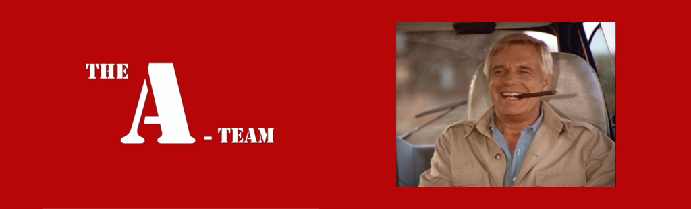
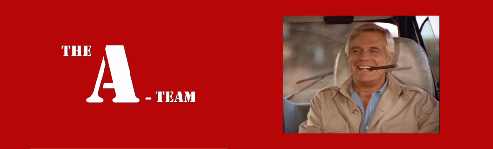

Background Bio Info
Colonel John "Hannibal" Smith, played by George Peppard, is a fictional character and one of the four protagonists of the 1980s action-adventure television series The A-Team. The producers originally had James Coburn in mind to play the part of Hannibal, but it eventually ended up going to Peppard. The character—which was based loosely on former United States Army Special Forces officer Bo Gritz appeared on The A-Team from its beginning in 1983 until its end in 1987. The character was played by Liam Neeson in the 2010 film adaptation. His often spoken line "I love it when a plan comes together" was included in TV Land's "The 100 Greatest TV Quotes and Catch Phrases" in 2006.